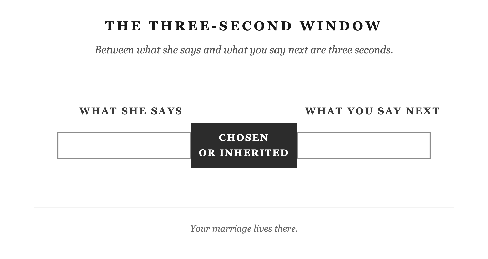
The moment between her words and your reply is a chance to choose your response instead of repeating an old habit.
Her words and your reply sit on either side of a dark interval. The words inside that interval, “chosen or inherited,” identify what can fill it: a deliberate response or a learned reaction. The dark block marks the place where your choice matters; its size is not a measured duration.
What is happening in the dark space between the two sets of words, and what choice does it give the husband?
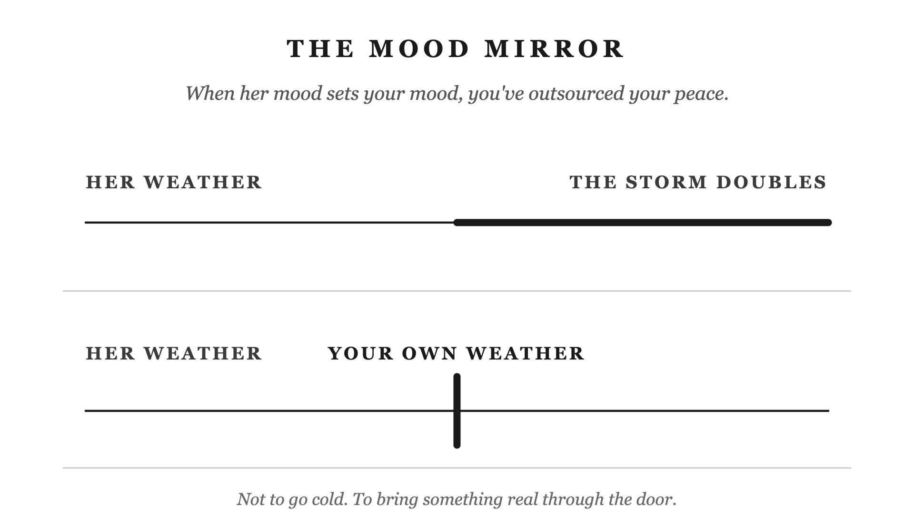
Bring your own steadiness into the room while remaining caring and engaged, rather than letting her mood determine yours.
The upper line grows heavier halfway through: her difficult mood has become a shared storm. In the lower line, a strong vertical mark represents the steadiness you bring. The line continues at its original weight. That mark is intended as self-command, not a wall shutting her out.
What changes between the two lines, and how would that difference show up in an evening together?
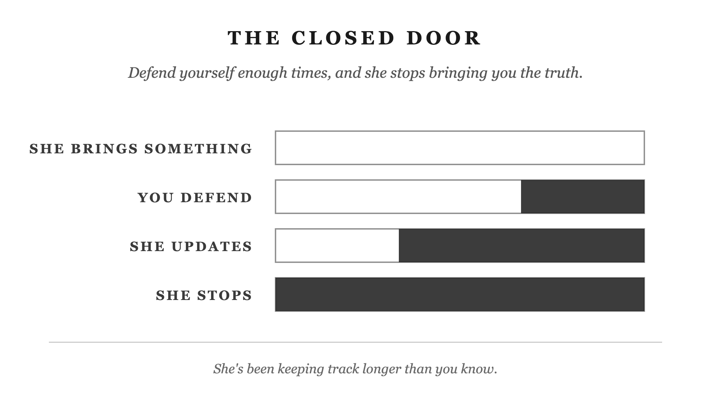
Repeated defensiveness teaches your wife that telling you the truth is not worth the cost. Keeping that conversation open starts with how you receive it.
The same doorway appears four times. It begins open, then fills as you defend, she revises her expectations, and she stops bringing things to you. The disappearing white space stands for her willingness to speak honestly, not how much she has left to say.
What is being lost as the bars fill, and what is causing that loss?
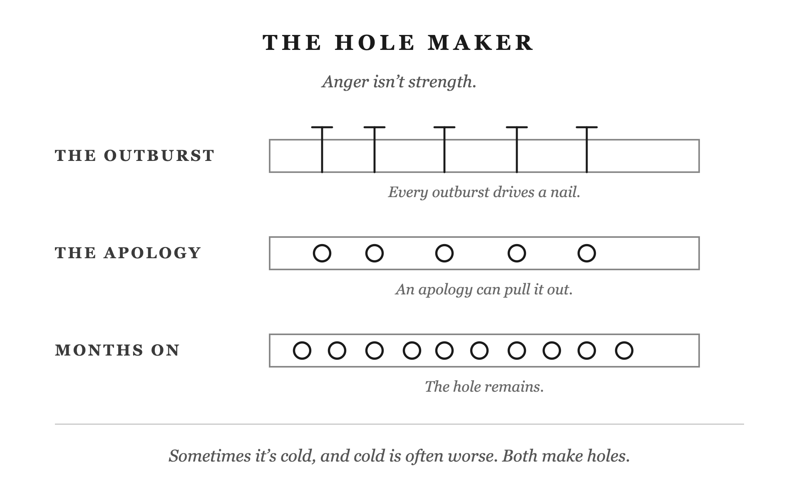
An apology matters, but it does not make the hurt of an outburst disappear. Repeated anger leaves damage that must be taken seriously.
Nails enter a board during an outburst. After the apology, the nails are gone but their holes remain. Months later, more holes have accumulated. The board represents the relationship carrying the consequences. The caption includes cold anger as well as loud anger; the picture warns about repeated harm rather than providing a timetable for repair.
What changes after the apology, what remains, and what does the final row add?
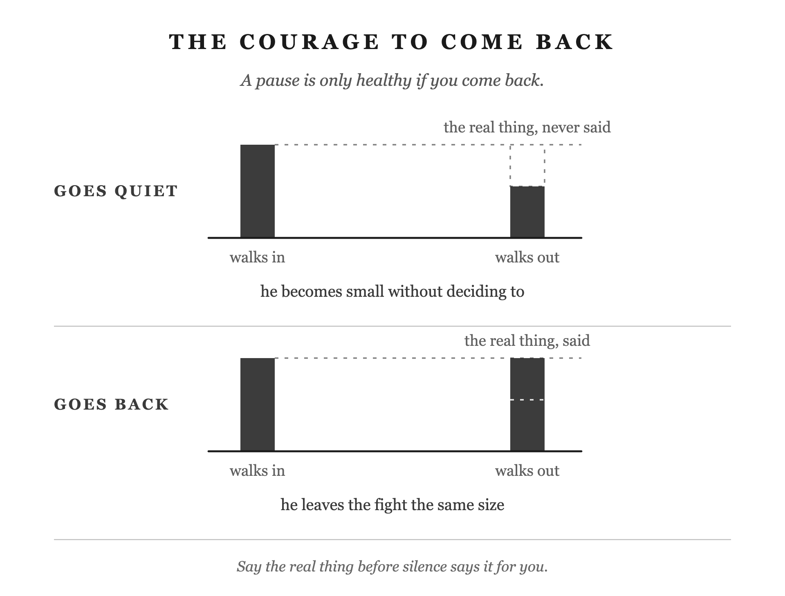
A pause helps only if you return to the unresolved concern and speak plainly. The plate uses “The Courage to Come Back”; the distillation still names “The Remaining Nails.” That naming discrepancy remains unresolved.
In the upper pair, the husband walks out smaller than he walked in. The missing height is labelled as the real thing he never said. In the lower pair, returning and saying it restores the missing piece. Equal height means retaining his voice and self-respect, not winning the argument or securing her agreement.
What does the missing piece represent, and what makes the lower conversation different?
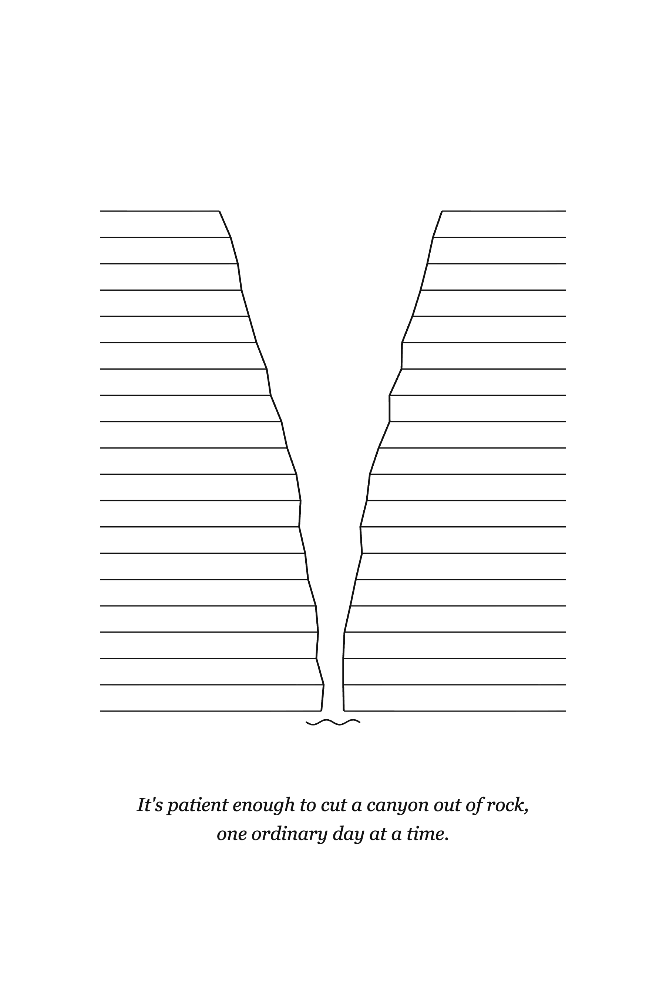
Steadiness is repeated daily practice. Patiently holding your direction through difficulty can shape a marriage over time.
Rock layers flank a deep canyon, with water running through it. The large cut in the landscape represents the cumulative effect of something persistent. The river’s small scale beside the rock is meant to make patience visible: ordinary days of steady action can have a large effect.
What relationship do you see between the water and the canyon, and what might that suggest about a husband’s daily choices?
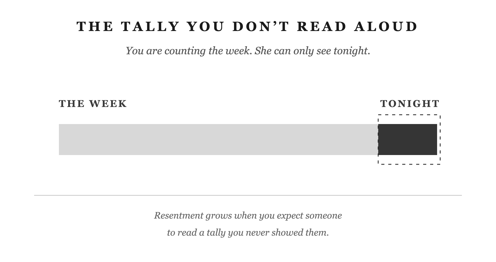
What your wife sees tonight may be only a small part of what you contributed this week. Expecting her to know the unseen total feeds resentment; notice each other’s work rather than defending a private score.
One continuous bar represents the week. Most of it is faint; only the short section inside the dashed “tonight” frame is dark. The faint work still happened. The frame represents the limited view available in the moment, not the full measure of either spouse’s contribution.
What does the dark portion show compared with the rest of the bar, and why might that difference matter at home?
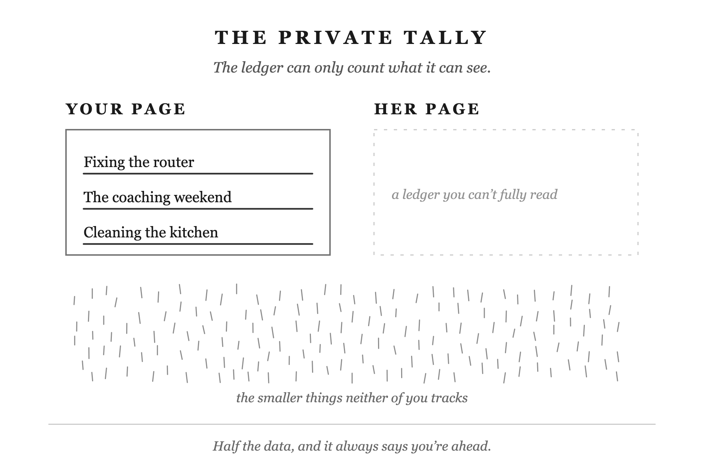
Your mental score cannot fairly measure who gives more because you know your own contributions best and miss much of hers. Give with care and appreciate what you cannot count.
Your page contains readable tasks; hers contains marks you cannot fully read. Her page is unavailable to you, not empty of effort. The scattered small marks beneath both pages represent contributions neither person records. Together, these elements show why a private tally is incomplete.
What information is available on each page, and what do the marks outside the pages suggest about keeping score?
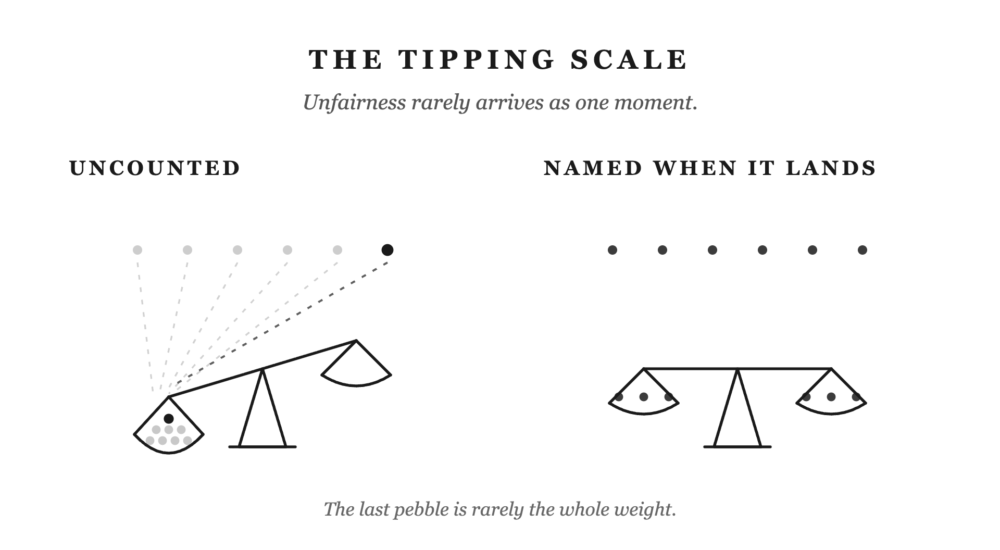
A grievance that feels sudden may carry weeks of small, unnoticed disappointments. Notice and address things as they happen instead of treating the last incident as the whole problem.
On the tilted scale, faint weights stand for things that landed without being acknowledged; the dark final weight is the one noticed. The level scale represents naming things as they arrive. The intended contrast is acknowledged versus unacknowledged weight, not an instruction to keep both spouses’ scores equal. Naming something does not by itself guarantee resolution.
What explains the difference between the two scales, and what does the final weight mean?
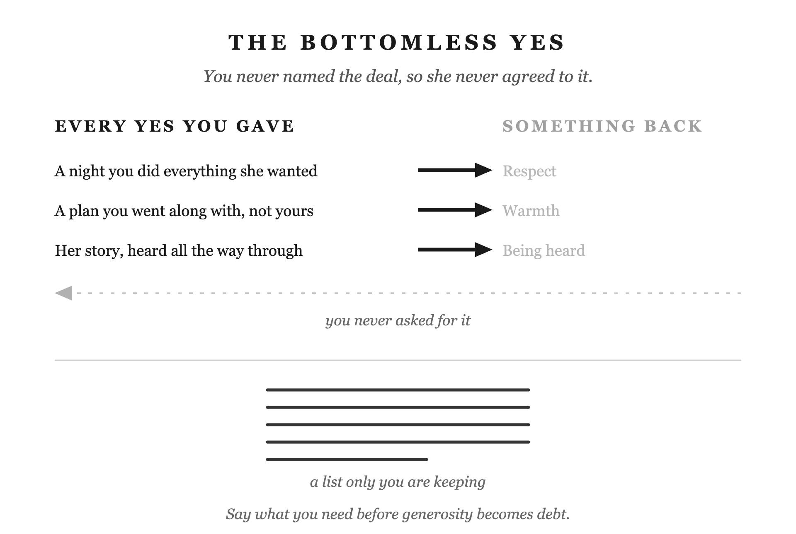
Giving while silently expecting a return can become resentment over a deal your wife never agreed to. Say what you need clearly before generosity becomes a private debt.
Solid arrows show things you gave. The faint dashed return arrow stands for respect, warmth, or attention you expected without asking. The small ledger below represents disappointments accumulating in a list only you keep. The picture describes an unspoken bargain, not proof that she owes repayment or gives nothing.
What is different about the outgoing and returning arrows, and how does the list below relate to them?
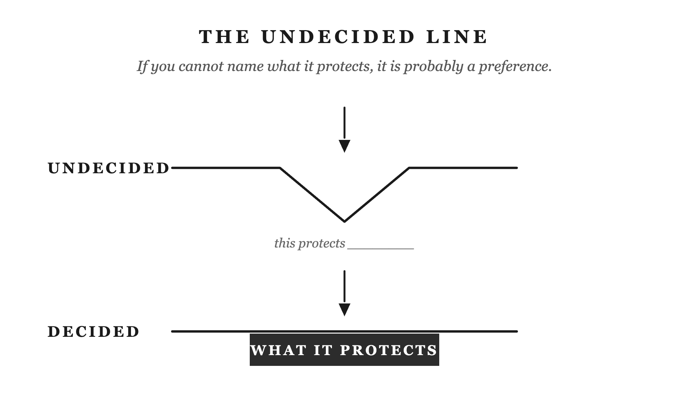
Before defending a boundary, be able to say what it protects. A named purpose gives you something more solid than an unexplained preference to hold and discuss.
Identical downward arrows press on two lines. The upper line bends where its purpose has been left blank. The lower line rests on a solid block labelled “what it protects” and stays level. The support is a clear reason for the boundary, not force applied to your wife.
What supports the lower line, and how would you describe that support in an actual disagreement?
Rehearsing an argument in your head does not tell your wife what is bothering you. When the problem needs a conversation, explain it kindly, ask clearly, and listen without demanding immediate agreement.
The left box is full of repeated inner arguments. The right box, “with her,” is empty because you have not told her. A short dashed arrow stops in the gap: the conversation has not arrived. “Tell her what’s bothering you. Then listen.” supplies the next action; the empty box does not mean she has refused to listen.
What has happened in the left box that has not happened in the right, and what would close that gap?
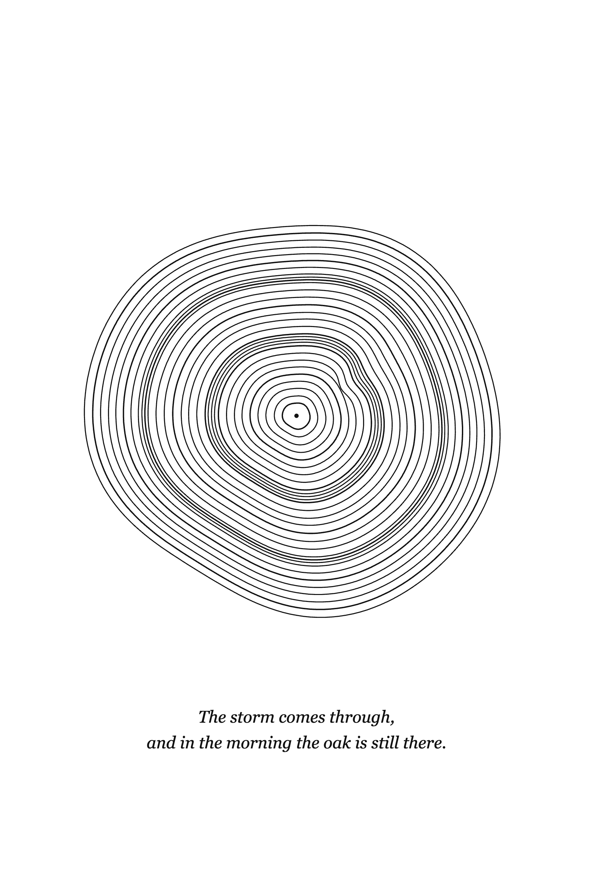
Be dependable through difficulty. Strength includes continuing to offer support after hard seasons have left their mark.
The tree’s cross-section contains successive rings, including crowded and uneven stretches. Those variations represent difficult years within a tree that continued growing. The rings remain part of one whole. The image is meant to show lived resilience and continuity, not a life without damage or strain.
What do the irregular rings suggest about this tree, and what kind of strength might it represent in a husband?
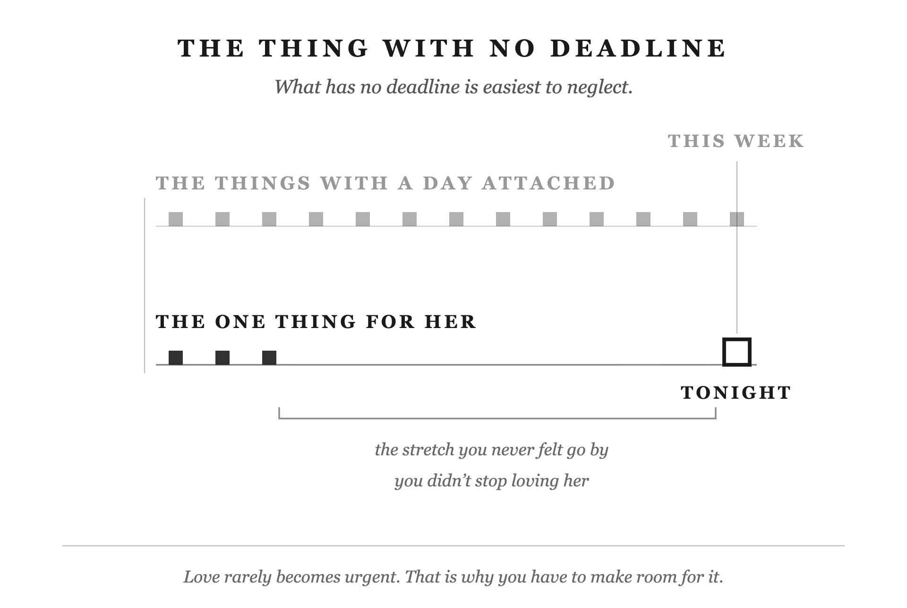
Romance is easy to neglect because nothing makes it urgent. Make room for care that is specifically for her before another week disappears.
The upper timeline stays filled with duties that have dates attached. The lower timeline starts with acts for her, then goes quiet for a long stretch. The large open square at “tonight” marks an opportunity still available. The contrast is between what the schedule demands and what you must choose to make time for; the squares are illustrative, not measured data.
What accounts for the empty stretch on the lower line, and what does its final open square offer?

Keep the curiosity and effort that drew you toward her when dating. Both of you are changing, so knowing her past does not replace discovering what matters to her now.
Two curving arrows move together from dating toward now, representing two people continuing to change. The left copy recalls wanting to hear what she thought; the right asks what happened next. The arrows connect early curiosity with continued attention. They do not mean that you already knew her answers when dating, or that marriage makes discovery unnecessary.
What should continue from dating into marriage here, and what do the two arrows suggest about the people involved?
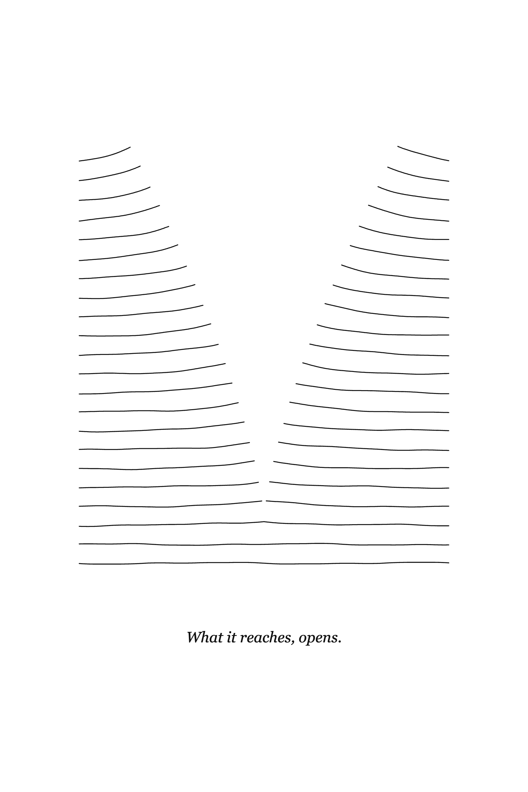
Offer warmth consistently through attention, affection, and generosity. Warmth invites openness without demanding gratitude or a particular response.
Paired banks of lines sit close together near the bottom and spread apart higher up. That opening is intended to evoke life responding to warmth, as the caption says, “What it reaches, opens.” There is no hand forcing them apart. The abstract shape can resemble an opening book; whether it conveys warmth rather than only opening is a question for the reader.
What seems to be happening to these lines, and what feeling or action in a marriage does that bring to mind?